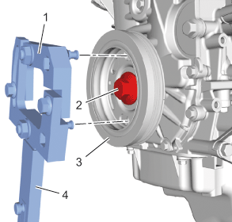
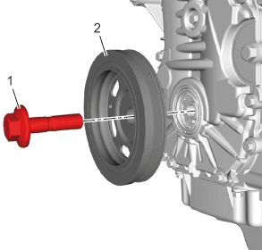

曲轴扭转减振器的更换（LI6）
专用工具
- • EN-49979曲轴减振支座固定件
- • EN-45059角度测量仪
拆卸程序
- 1.水泵皮带»拆下–水泵皮带的更换
-

2.将EN-49979支座固定件(1)和加长件(4) 安装到曲轴扭转减振器上。
-
3.使用EN-49979支座固定件和加长件在松开曲轴扭转减振器螺栓 (2)时固定曲轴扭转减振器（3）。
-

4.曲轴扭转减振器螺栓(1)»拆下并报废
- 5.曲轴扭转减振器(2)»拆下
安装程序
-
1.曲轴扭转减振器(2)»安装
- 2.松弛地安装新的曲轴扭转减振器螺栓(1)。
-
3.使用EN-49979支座固定件（1）和加长件(4)在紧固曲轴扭转减振器螺栓 (2)时防止曲轴转动。
- 4.拧紧曲轴扭转减振器螺栓。
- 4.1 第一遍将螺栓紧固至100 N•m（74 lb ft）。
- 4.2 最后一遍使用EN-45059角度测量仪将螺栓紧固120度。
- 5.将EN-49979支座固定件和加长件从曲轴扭转减振器上拆下。
- 6.水泵皮带»安装–水泵皮带的更换